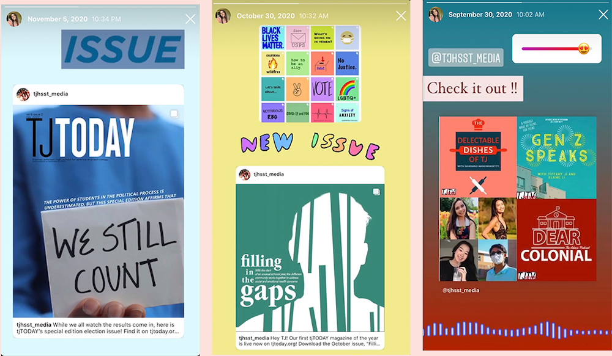

Print Analytics
Awards
- 2021: Columbia Scholastic Press Association Awards Finalist (Gold or Silver, to be announced in March)
- 2020: Columbia Scholastic Press Association Awards Gold Crown Winner
- 2020: National Scholastic Press Association (NSPA) NSPA Pacemaker Winner
Views
- In-person magazine circulation: 1100 print copies per issue
- Virtual magazine circulation: 237 print copies per issue
Increasing Viewership
Though our magazine does not require funding, as it is already funded by the school, I strive to increase our print issue viewership by advertising our issues and publications on my personal Instagram account.
I created the left post to promote our November print issues, the middle post to promote our October print issues, and the right post to promote our podcast network. When creating these posts, I make them as interactive and aesthetic as possible, using features such as polls, to encourage my followers to view our publications.